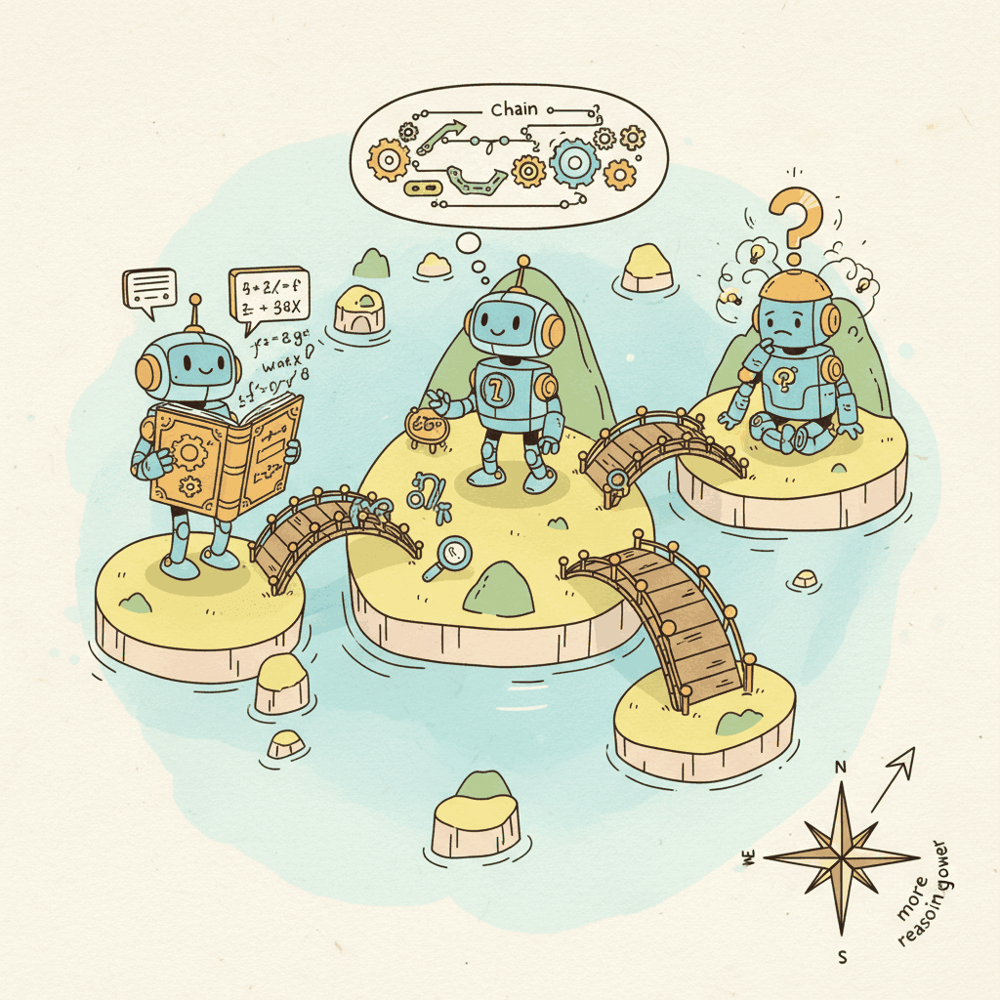
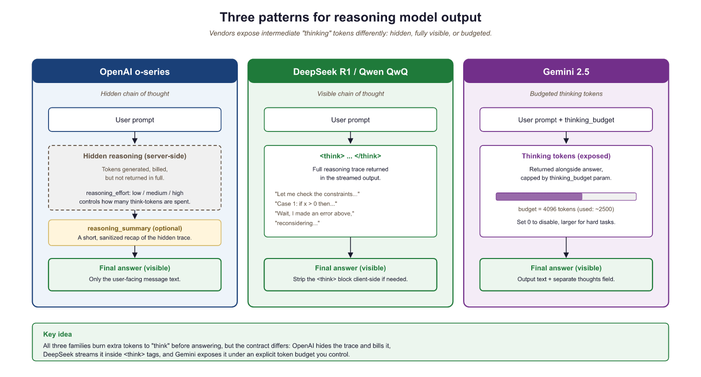

Every reasoning model is a transformer that learned to procrastinate productively.
Chinchilla, Productively Procrastinating AI Agent
A survey of reasoning architectures. The test-time compute paradigm introduced in Section 8.1 is implemented differently by each major lab. OpenAI's o-series uses hidden chain-of-thought with RL training. DeepSeek R1 makes the reasoning trace visible and trains with a novel group optimization algorithm. Google integrates thinking mode into Gemini as a togglable feature. This section maps the landscape, comparing architectures, training methods, and benchmark performance to help practitioners choose the right reasoning model for their use case.
Prerequisites
This section builds on the test-time compute paradigm from Section 8.1 and assumes familiarity with the Transformer architecture from Section 3.1. Knowledge of the broader model landscape from Section 7.1 (frontier models) and Section 7.2 (open models) provides useful context.

8.2.1 Architecture Patterns for Reasoning
All current reasoning models share a common foundation: they are autoregressive transformers that generate tokens sequentially. What makes them "reasoning models" is not a different architecture but how they are trained and how they spend their token budget. The key architectural patterns are:
8.2.1.1 Thinking Tokens
Reasoning models generate special "thinking tokens" that represent the model's internal deliberation process. These tokens are part of the model's output sequence and consume the same compute per token as any other generated text. The critical difference from standard chain-of-thought prompting is that reasoning models are trained to produce these thinking tokens through reinforcement learning, rather than relying on a user prompt to elicit them.
There are two main approaches to thinking tokens:
- Hidden thinking (OpenAI o-series): The thinking tokens are generated during inference but hidden from the API response. The user sees only a summary of the reasoning process (if any) and the final answer. This protects the model's reasoning strategies from being extracted but limits transparency and debuggability.
- Visible thinking (DeepSeek R1, QwQ): The thinking tokens are part of the model's output, typically enclosed in delimiters like
<think>...</think>. Users can inspect the full reasoning trace, which aids debugging and trust but exposes the model's reasoning patterns.
8.2.1.2 The Think-Then-Answer Pattern
Regardless of visibility, all reasoning models follow a two-phase generation pattern:
- Thinking phase: The model generates a potentially long sequence of reasoning tokens. During this phase, the model breaks the problem into steps, explores alternatives, performs calculations, checks intermediate results, and may backtrack and revise earlier reasoning.
- Answer phase: After the thinking phase, the model generates the final response that is presented to the user. This is typically concise and well-structured, distilling the extensive reasoning into a clear answer.
In DeepSeek R1, this pattern is explicitly marked with <think> and </think> tags. In OpenAI models, the transition is internal. In Gemini 2.5 thinking mode, the model generates "thoughts" that are returned as a separate field in the API response.
The think-then-answer pattern in reasoning models mirrors the dual-process theory of cognition proposed by psychologists Daniel Kahneman and Amos Tversky. Kahneman's "System 1" operates fast and intuitively (like a standard LLM producing tokens reflexively), while "System 2" is slow, deliberate, and logical (like the reasoning model's extended thinking phase). Standard LLMs are essentially pure System 1: they generate fluent text through pattern matching but struggle with problems requiring sustained logical deduction. Reasoning models add a System 2 layer by using reinforcement learning to train the model to allocate deliberate computation before committing to an answer. The striking parallel is that just as humans can solve harder problems by "thinking slowly" at the cost of more time and mental effort, reasoning models solve harder problems by generating more thinking tokens at the cost of more compute and latency.
8.2.2 OpenAI o-Series
OpenAI pioneered the commercial reasoning model category with the release of o1 in September 2024. The o-series has since expanded to include multiple models optimized for different points on the cost/capability frontier.
8.2.2.1 o1 (September 2024)
The original reasoning model. Key characteristics:
- Training: Large-scale reinforcement learning (details not publicly disclosed) that teaches the model to produce extended chains of thought. The RL reward signal is believed to incorporate correctness verification on math and code tasks.
- Reasoning trace: Hidden from the user. The API returns a summary field describing the reasoning approach but does not expose the actual thinking tokens.
- Context window: 200K tokens input, up to 100K tokens output (including thinking).
- Benchmark highlights: 83.3% on AIME 2024 (math competition), 94.8% on MATH-500, 89.0% on GPQA Diamond (graduate-level science).
8.2.2.2 o3 and o4-mini (2025)
OpenAI's second-generation reasoning models represent a significant step forward in both capability and efficiency.
o3 is the full-scale reasoning model with the highest capability:
- Achieves 96.7% on AIME 2024, a near-perfect score on competition mathematics
- Solves 25.2% of problems from FrontierMath, a dataset specifically designed to be unsolvable by current AI
- 71.7% on SWE-bench Verified (real-world software engineering tasks)
- Supports tool use (function calling, web browsing, code execution) during reasoning
- The
reasoning_effortparameter allows users to control the trade-off between quality and speed (low, medium, high)
o4-mini is the cost-optimized variant:
- Substantially cheaper than o3 while retaining strong reasoning capabilities
- Achieves 93.4% on AIME 2024 (only 3.3 percentage points below o3)
- Designed for high-volume applications where per-query cost matters
- Same
reasoning_effortparameter for budget control
8.2.2.3 The reasoning_effort Parameter
A distinctive feature of OpenAI's o-series is the reasoning_effort parameter, which gives users explicit control over how much thinking the model performs. This is a direct implementation of the adaptive compute allocation principle from Section 8.1. The following table summarizes the typical token budgets and use cases for each setting.
| Setting | Typical Thinking Tokens | Use Case | Cost Multiplier vs. Standard |
|---|---|---|---|
| low | 100 to 500 | Simple reasoning, classification | 2x to 5x |
| medium (default) | 500 to 3,000 | Multi-step analysis, code generation | 5x to 20x |
| high | 3,000 to 50,000+ | Competition math, complex proofs, hard debugging | 20x to 100x+ |
Notice that the cost multiplier spans two orders of magnitude: a "high" effort query can cost 50x or more compared to a "low" effort query. Choosing the right setting per task is therefore a direct lever on serving costs.
8.2.3 DeepSeek R1
With OpenAI's approach established, let us turn to the most important open-weight alternative. DeepSeek R1 (January 2025) is the most significant open-weight reasoning model to date. Its release included not only the model weights but also a detailed technical report that revealed much about how reasoning models are trained. This transparency has made R1 the most studied reasoning model in the research community.
8.2.3.1 R1-Zero: Emergent Reasoning
Before training R1, DeepSeek conducted a remarkable experiment: training a model (R1-Zero) with pure reinforcement learning, using only answer-correctness rewards and no supervised chain-of-thought data whatsoever. The result surprised the research community. R1-Zero spontaneously learned to:
- Break problems into sequential reasoning steps
- Perform self-verification ("Let me check this calculation...")
- Backtrack when detecting errors ("Wait, that does not work. Let me try another approach...")
- Allocate more thinking tokens to harder problems (emergent adaptive compute)
This demonstrated that extended chain-of-thought reasoning is not something that must be explicitly taught through supervised examples. It emerges naturally when a sufficiently capable model is optimized for correctness through RL. The implications are profound: reasoning is a convergent behavior that arises from optimizing for accurate outcomes, not a human-specific cognitive strategy that must be mimicked.
Reasoning emerges from reward, not from imitation. R1-Zero's spontaneous development of chain-of-thought, self-verification, and backtracking demonstrates that you do not need human-written reasoning traces to train a reasoning model. You need only a reward signal that tells the model whether its final answer is correct. The model discovers that "thinking out loud" in its token stream is the optimal strategy for maximizing that reward. This finding has practical implications for anyone RLHF: the right reward function can elicit behaviors far more sophisticated than what you could teach through supervised examples alone.
8.2.3.2 R1: The Production Model
Building on R1-Zero's insights, DeepSeek trained R1 with a multi-stage pipeline:
- Cold start with supervised data: Fine-tune the base model on a small set of high-quality reasoning examples to establish stable formatting (the
<think>tags) and avoid the degenerate behaviors observed in R1-Zero (language mixing, excessive repetition). - Large-scale RL with GRPO: Train using Group Relative Policy Optimization on math, code, and science tasks with verifiable answers. GRPO is described in detail in Section 8.3.
- Rejection sampling for general tasks: Use the RL-trained model to generate reasoning traces for non-verifiable tasks (writing, summarization), filter for quality, and fine-tune on the filtered set.
- Final RL round: A second RL phase optimizes for both helpfulness and safety on general-purpose tasks.
8.2.3.3 R1-Distill Variants
DeepSeek also released distilled versions that transfer R1's reasoning capabilities into smaller models:
| Model | Base | Parameters | AIME 2024 | MATH-500 | Notes |
|---|---|---|---|---|---|
| R1 | DeepSeek V3 | 671B (37B active) | 79.8% | 97.3% | Full MoE model |
| R1-Distill-Qwen-32B | Qwen 2.5 32B | 32B | 72.6% | 94.3% | Best cost/performance ratio |
| R1-Distill-Qwen-14B | Qwen 2.5 14B | 14B | 69.7% | 93.9% | Fits on consumer GPUs |
| R1-Distill-Llama-8B | Llama-3.1 8B | 8B | 50.4% | 89.1% | Smallest variant |
| R1-Distill-Qwen-1.5B | Qwen 2.5 1.5B | 1.5B | 28.6% | 83.9% | Edge deployment possible |
The distillation results are striking. A 32B distilled model achieves 72.6% on AIME 2024, which is competitive with o1's 83.3% despite being a fraction of the size. The 14B variant runs on a single consumer GPU (with quantization) while maintaining strong mathematical reasoning. These distilled models demonstrate that the knowledge discovered through RL-trained reasoning can be effectively transferred through distillation (covered in Chapter 17).
DeepSeek R1-Zero, trained with zero supervised reasoning examples, spontaneously started writing phrases like "Hmm, let me reconsider..." and "Wait, that cannot be right" in its thinking traces. It independently reinvented the human habit of talking to yourself while solving hard problems. The model was never shown examples of self-correction; it discovered that self-correction improves accuracy and was reinforced for doing so.
8.2.4 Google Gemini 2.5 Thinking Mode
Google took a different approach to reasoning models by integrating thinking capabilities directly into the Gemini model family as a togglable feature rather than releasing separate reasoning-specific models.
8.2.4.1 Gemini 2.5 Pro and Flash
Gemini 2.5 Pro (released March 2025) includes a "thinking mode" that, when enabled, causes the model to generate an internal reasoning trace before producing its answer. Key characteristics:
- Unified model: The same model supports both standard and thinking modes. Users enable thinking via a parameter in the API request.
- 1M token context: Gemini 2.5 Pro supports up to 1 million tokens of input context, the largest among reasoning models. This enables reasoning over very long documents.
- Native multimodal reasoning: Unlike other reasoning models that focus on text-only reasoning, Gemini 2.5 can reason over images, video, and audio inputs natively.
- Thinking budget: The API exposes a
thinkingBudgetparameter (0 to 24,576 tokens) that controls maximum thinking length. - Benchmark performance: Competitive with o3 on math and coding benchmarks, with particularly strong performance on multi-modal reasoning tasks.
Gemini 2.5 Flash is the cost-optimized variant, offering thinking capabilities at lower cost and latency. It is positioned similarly to o4-mini in the OpenAI lineup.
8.2.5 QwQ and Other Reasoning Models
Beyond the major labs, several other teams have released competitive reasoning models. These entries are significant because they demonstrate that reasoning capabilities are not exclusive to the largest organizations.
8.2.5.1 QwQ (Qwen with Questions)
Alibaba's Qwen team released QwQ-32B-Preview in November 2024, followed by QwQ-32B in March 2025. QwQ is notable for being one of the first open-weight reasoning models, predating R1 by about two months.
- 32B parameters: A dense (non-MoE) model that fits on a single high-end GPU
- Visible reasoning: Like R1, QwQ produces visible thinking traces
- AIME 2024: 79.5% (QwQ-32B), competitive with R1 at a much smaller scale
- Apache 2.0 license: Fully permissive for commercial use
- Strong multilingual reasoning: Particularly effective for Chinese and English mathematical reasoning
8.2.5.2 Kimi k1.5
Moonshot AI's Kimi k1.5 is a reasoning model notable for its long-context reasoning capabilities and its use of Section 18.1 combined with outcome-based rewards. The model supports reasoning over very long inputs (up to 128K tokens) and achieves competitive scores on math and coding benchmarks.
8.2.5.3 Anthropic Extended Thinking
Anthropic's approach to reasoning differs from the dedicated reasoning model paradigm. Rather than training a separate reasoning model, Anthropic added "extended thinking" capabilities to Claude 3.5 Sonnet and subsequent models. When enabled, Claude generates an internal thinking trace (visible to the developer) before producing its response. The developer can set a budget_tokens parameter to control maximum thinking length.
8.2.6 Comparison Table
With the major reasoning models surveyed individually, the table below consolidates their key properties for side-by-side comparison. Pay particular attention to the relationship between openness and benchmark performance.
| Model | Parameters | Open Weight? | Training Method | Thinking Visibility | AIME 2024 | MATH-500 | SWE-bench |
|---|---|---|---|---|---|---|---|
| o1 | Undisclosed | No | RL (undisclosed) | Hidden | 83.3% | 94.8% | 48.9% |
| o3 | Undisclosed | No | RL (undisclosed) | Hidden | 96.7% | 98.0%+ | 71.7% |
| o4-mini | Undisclosed | No | RL (undisclosed) | Hidden | 93.4% | 97.3% | 68.1% |
| DeepSeek R1 | 671B (37B active) | Yes | GRPO | Visible (<think>) | 79.8% | 97.3% | 49.2% |
| Gemini 2.5 Pro | Undisclosed | No | Undisclosed | Separate field | ~92% | ~97% | 63.8% |
| QwQ-32B | 32B | Yes | RL + SFT | Visible | 79.5% | 95.2% | N/A |
| Kimi k1.5 | Undisclosed | No | RL + RLHF | Visible | 77.5% | ~96% | N/A |
Benchmark numbers change rapidly and should be interpreted with caution. Different labs may use different evaluation setups (number of attempts, temperature, post-processing) that are not always comparable. The numbers above represent approximate performance as reported in official technical reports and blog posts, collected through early 2025. For the latest numbers, consult the official leaderboards and technical reports cited in the bibliography.

8.2.7 Choosing a Reasoning Model
For practitioners deciding which reasoning model to use, the choice depends on several factors. The following decision table maps common priorities to recommended models and the reasoning behind each recommendation.
| Priority | Recommended Model | Rationale |
|---|---|---|
| Maximum accuracy (cost not primary concern) | o3 (high effort) | Highest benchmark scores across math, code, and science |
| Best cost/accuracy ratio (API) | o4-mini or Gemini 2.5 Flash | Strong reasoning at lower per-token cost |
| Data privacy / on-premises deployment | R1-Distill-Qwen-32B or QwQ-32B | Open-weight, deployable on your infrastructure |
| Multimodal reasoning (images, video) | Gemini 2.5 Pro | Native multimodal support with thinking mode |
| Long-document reasoning | Gemini 2.5 Pro (1M context) | Largest context window among reasoning models |
| Debugging / transparency | R1 or QwQ | Visible reasoning traces for inspection |
| Edge / mobile deployment | R1-Distill-Qwen-1.5B (quantized) | Smallest reasoning model with viable performance |
Not every query needs extended reasoning. Route simple factual questions to fast, cheap inference and reserve expensive test-time compute (multiple samples, verification loops) for genuinely complex queries. This can cut costs by 5 to 10x with minimal quality loss.
The reasoning model landscape is evolving at an extraordinary pace. OpenAI's o3 (late 2024) and o4-mini (2025) significantly advanced performance on mathematical and scientific reasoning benchmarks, while DeepSeek R1 (January 2025) proved that open-weight reasoning models can compete with proprietary ones using novel GRPO training. Google's Gemini 2.5 Pro and Flash (2025) integrated reasoning as a configurable feature with explicit thinking budgets. An emerging research direction is reasoning distillation: the R1-Distill series demonstrated that reasoning capabilities can be transferred from 671B-parameter models to 7B and even 1.5B models, opening the door to on-device reasoning (DeepSeek-AI, 2025). Meanwhile, Qwen's QwQ-32B-Preview showed that mid-sized open models can exhibit strong reasoning when trained with appropriate RL curricula.
- Three visibility patterns: OpenAI hides reasoning traces, DeepSeek/QwQ expose them fully, and Gemini provides them as a separate API field. The choice affects debuggability, IP protection, and user experience.
- R1-Zero proved that chain-of-thought reasoning emerges from pure RL without supervised examples, a finding with deep implications for understanding reasoning in AI systems.
- Distillation works: R1-Distill models show that reasoning capabilities can be transferred to models 20x smaller, enabling deployment on consumer hardware.
- Budget control APIs (reasoning_effort, thinkingBudget, budget_tokens) give practitioners explicit control over the cost/quality trade-off per query.
- Model choice depends on constraints: data privacy, latency, cost, and multimodal needs all influence which reasoning model is appropriate for a given application.
Show Answer
Given the data privacy constraint, only open-weight models qualify: DeepSeek R1, R1-Distill variants, or QwQ-32B. For the 30-second latency requirement with security vulnerability detection:
- Primary candidate: R1-Distill-Qwen-32B. This offers the best reasoning capability among deployable open models. Deploy on 2x A100 80GB GPUs with vLLM for efficient serving. The 32B parameter count allows reasonable latency, and the model's MATH/AIME performance suggests strong logical reasoning that transfers to code analysis.
- Fallback: QwQ-32B. Similar size and capability, Apache 2.0 licensed. Good for comparison testing.
- If latency is tight: R1-Distill-Qwen-14B with 4-bit quantization on a single A100. Faster inference at some accuracy cost.
Deployment: Use vLLM with continuous batching, set max_tokens to limit thinking length (e.g., 4096 thinking tokens), and implement a timeout that returns the model's best answer so far if the 30-second limit approaches. Evaluate on a curated set of known vulnerabilities (CWE-classified examples) to validate the 80% accuracy threshold before production deployment.
Show Answer
R1-Zero's significance lies in demonstrating that chain-of-thought reasoning is an emergent property of optimizing for correctness, not a skill that must be explicitly taught through imitation of human reasoning examples. The key implications:
- Convergent behavior: When a sufficiently capable model is given a reward signal that only measures answer correctness, it independently discovers that breaking problems into steps, verifying intermediate results, and backtracking on errors leads to higher rewards. This suggests that step-by-step reasoning is a convergent strategy for solving complex problems, not a human-specific cognitive pattern.
- RL sufficiency: Supervised chain-of-thought data is not necessary for teaching reasoning. This is practically important because generating high-quality supervised reasoning data is expensive and potentially limiting (the model can only learn reasoning strategies present in the training data). RL allows the model to discover novel strategies.
- Self-correction emergence: The model spontaneously learned self-correction behaviors (phrases like "wait, let me reconsider") without any examples. This suggests that self-correction is instrumentally valuable for accuracy and will emerge under RL pressure.
The caveat is that R1-Zero also exhibited degenerate behaviors (language mixing, excessive repetition) that required a supervised cold-start in the production R1 model. Pure RL discovers good reasoning strategies but may produce outputs that are not human-readable without formatting supervision.
Show Answer
Hypothesis 1: Training data quality and diversity. OpenAI likely has access to a larger and more diverse set of mathematical reasoning training examples, including proprietary datasets of competition mathematics with verified solutions. Experiment: Train an R1-scale model using publicly available AIME/AMC/IMO training data augmented with synthetic solutions from R1 itself (self-play), and compare AIME scores. If data quantity is the bottleneck, augmenting the training set should close the gap.
Hypothesis 2: RL training scale and reward model quality. OpenAI's RL training may use a more powerful reward model (potentially based on a frontier model like GPT-4.5) and longer RL training runs. GRPO's advantage (no critic model needed) may also be its limitation (less accurate reward signals). Experiment: Train R1-class models with GRPO vs. PPO (using a strong reward model) at matched compute budgets and compare. If PPO with a strong reward model wins, it suggests reward model quality matters more than training algorithm elegance.
Hypothesis 3: Test-time compute budget. o3 may be using substantially more thinking tokens on hard problems than R1. If o3 generates 20,000+ thinking tokens on AIME problems while R1 generates 5,000, the performance gap could be partly explained by raw inference compute rather than model quality. Experiment: Control for test-time compute by giving R1 more attempts (best-of-N with N=64 or higher) or explicitly increasing its thinking token limit, and measure whether the gap narrows. If AIME performance improves significantly with more test-time compute, the gap is partly a compute budget issue rather than a fundamental capability difference.
Exercises
In the context of reasoning models, what is a reward model and how does it guide the model toward better reasoning? How is this different from the reward models used in standard RLHF?
Answer Sketch
A reward model for reasoning is trained to score the quality of reasoning chains, not just final answers. It evaluates whether intermediate steps are correct, logically connected, and progress toward the solution. Unlike standard RLHF reward models (which score helpfulness, harmlessness, and honesty of conversational responses), reasoning reward models specifically evaluate logical validity and mathematical correctness. They can be trained on human annotations of correct/incorrect reasoning steps or automatically using outcome verification (did the chain reach the right answer?).
Distinguish between outcome-based reward models (ORM, which judge the final answer) and process-based reward models (PRM, which judge each reasoning step). What are the advantages of PRMs?
Answer Sketch
ORMs only check whether the final answer is correct, giving a single reward signal. PRMs evaluate each intermediate step independently, providing dense reward signals. PRM advantages: (1) denser feedback helps RL training converge faster. (2) Can identify exactly where reasoning went wrong, enabling targeted correction. (3) Correct final answers reached through flawed reasoning get penalized (reducing unfaithful CoT). (4) Enable step-level search and verification during inference. The main challenge: PRMs are much more expensive to train because they require step-level annotations, which are harder to collect than outcome labels.
Some reasoning systems use Monte Carlo Tree Search (MCTS) to explore multiple reasoning paths. Explain how MCTS applies to text generation: what are the nodes, edges, and rollouts in this context?
Answer Sketch
Nodes: partial reasoning chains (sequences of tokens or reasoning steps generated so far). Edges: possible next steps (next tokens or next reasoning sentences). Rollouts: completing the reasoning chain to get a final answer, then evaluating it (correct/incorrect). MCTS balances exploration (trying new reasoning approaches) with exploitation (deepening promising chains). At each node, select the child with the best UCB score (balancing value estimate and visit count). This allows the model to explore multiple reasoning strategies and commit to the most promising one, rather than committing to the first generated chain.
Given a fixed compute budget, is it better to (a) sample 16 independent reasoning chains and take majority vote, or (b) use a PRM to guide tree search with the same total token budget? Under what conditions does each strategy win?
Answer Sketch
Independent sampling (a) wins when: reasoning errors are relatively random and independent across samples (majority vote averages them out), the problem has a clear correct answer, and implementing tree search is not feasible. Guided search (b) wins when: the PRM is high quality, reasoning paths have shared structure that can be exploited (early steps often overlap), and the problem benefits from strategic exploration rather than random restarts. Empirically, guided search tends to outperform sampling on math and logic problems, while sampling is competitive on tasks where solution approaches vary widely (creative problem-solving, open-ended reasoning).
OpenAI's o1 and DeepSeek's R1 are trained using reinforcement learning to produce better reasoning. Describe the RL training pipeline: what is the reward signal, how is exploration encouraged, and what prevents the model from gaming the reward?
Answer Sketch
Reward signal: primarily outcome-based (did the model get the correct answer on verifiable problems like math and code). Exploration: entropy bonuses and temperature sampling during RL training encourage diverse reasoning strategies. KL divergence penalty against the base model prevents collapse to a narrow set of behaviors. Preventing reward gaming: (1) using verifiable tasks where the answer is objectively correct (not subject to reward model errors). (2) Diverse training problems so the model cannot memorize solutions. (3) Process-level supervision when available to verify reasoning quality, not just outcomes. The resulting models learn to allocate more tokens (and thus more computation) to harder problems, effectively learning a meta-strategy for reasoning effort allocation.
What Comes Next
Section 8.3 goes deeper into the training methods behind these models: Section 8.3: Training Reasoning Models: RLVR, GRPO, PRM, GRPO, process reward models, and the STaR bootstrapping approach.
For the reinforcement-learning-from-verifier-feedback recipes that train reasoning models like R1, see Section 18.5: GRPO and Reasoning-Model RL. For the inference-time scaling pattern (best-of-N, beam search, MCTS) that test-time compute exploits, see Section 8.5: Test-Time Compute Scaling. For the synthetic-reasoning-data pipelines that bootstrap reasoning models, see Section 15.6: Synthetic Reasoning Data.